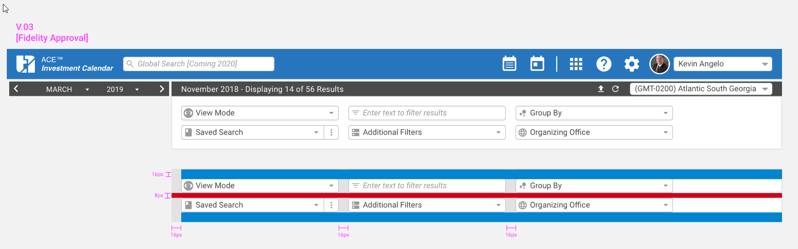
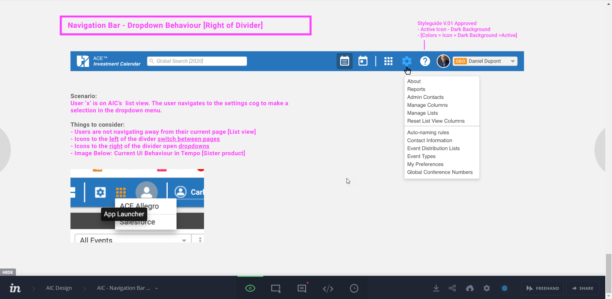

Overview
Tier1 Financial Solutions serves investment banking professionals with a multi-product desktop suite. Each product had grown independently — different navigation patterns, filter components that looked similar but behaved inconsistently, and no shared colour or typography standards.
I joined to address that fragmentation. The goal: build a consistent, scalable design foundation across Tier1's desktop products that reduces friction for users and improves delivery speed for the team.
Differing navigation patterns between products, inconsistent filter component behaviour, mismatched spacing, and no shared colour or typography standards — creating user friction and slowing delivery cycles.
Comprehensive UI audit → Figma component library with master components → annotated InVision specs → developer-validated documentation across all products.
The Problem
Investment banking professionals use Tier1's products under real pressure — managing large datasets, working across multiple platforms, and navigating compliance-sensitive workflows daily. Every inconsistency in the UI costs them time and cognitive load they can't afford.
"How might we create a consistent, scalable design foundation across Tier1's desktop products that reduces friction for users and improves delivery speed for the team?"
The specific pain points surfaced in the audit were concrete: the filter toolbar — used extensively across the ACE Investment Calendar and related products — had different states and interaction patterns depending on which product you were in. Navigation icons left of the divider switched pages; those to the right opened dropdowns within the current view. But that convention wasn't documented anywhere, so developers interpreted it differently across products.
Differing navigation patterns between products
Similar-looking filter components with inconsistent behaviour
Inconsistent spacing with no shared token layer
No shared colour or typography standards across products
Process
I started by reviewing every navigation bar, toolbar, filter control, and data grid across the Tier1 suite. The goal wasn't to rebuild everything — it was to identify what could be unified, what needed platform-specific variants, and where the highest-impact inconsistencies lived.
The ACE Investment Calendar's filter toolbar stood out immediately. Heavy daily usage by professionals managing large datasets made it the highest-leverage component to standardise first.

The filter toolbar was used across every key view in the suite. To bring consistency, I rebuilt it as a master component in Figma — defining explicit spacing values (16px horizontal padding, 8px row gaps) and locked interaction states for each dropdown.
Annotated InVision specs accompanied every component — colour values, background tokens, and border rules spelled out explicitly, leaving no room for developer interpretation in a compliance-regulated context.
V.03 Fidelity Approval — spacing documentation went through multiple review rounds with engineering to validate feasibility within the Salesforce platform constraints before sign-off.
The navigation bar had an implicit convention that had never been written down: icons to the left of the divider switch between pages; icons to the right open dropdowns within the current view.
Without that documentation, developers had built this differently across products. I worked with engineers to formally capture the rule, implement consistent active icon states (dark background on the right-side icons), and cross-reference this pattern throughout the Tier1 product suite.

Design Decisions
Enterprise SaaS design systems aren't just about visual consistency — they're about reducing cognitive load for professionals working under pressure. Every decision I made prioritised clarity and reduced room for interpretation.
Spacing was never described as "comfortable" or "generous." Every value was documented with an exact pixel figure — 16px horizontal padding, 8px row gap — eliminating developer interpretation in a compliance-regulated environment.
Each component defined default load state and active filter state separately — with explicit colour values for text, background, and border in each state. No component left the system without its full state inventory documented in InVision.
Related products were documented with explicit cross-references. When the navigation bar divider convention was applied to one product, it was linked to every other product where the same pattern existed — ensuring no product silently diverged.
Before any component reached final documentation, I validated Salesforce platform constraints with developers. The pre-variant Figma constraint actually strengthened the system — it forced disciplined master component structure and explicit documentation rather than relying on variants to carry the communication weight.
Reflection
Working without Figma's variant system — which didn't exist yet at the time — forced a level of documentation discipline that I've carried into every system project since. When you can't rely on tooling to carry the communication weight, you have to make every annotation count.
The constraint also clarified something I've found to be true across every design system engagement: the value of a system isn't in its visual polish — it's in how quickly it helps the team make decisions. Explicit rules, documented conventions, and validated specs are what ship products, not beautiful component libraries in isolation.
Introduce design tokens to allow visual updates (colour, spacing) to propagate automatically without touching individual components. Add in-file contribution guidelines to support design team growth and reduce system debt over time.